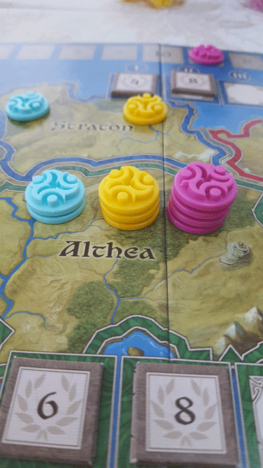

In this Ethnos review, Board Crazy checks out the simple, card-drafting board game that was designed by Paolo Mori and published by CMON & Spaghetti Western Games. In Ethnos, players compete to build the best bands of allies and take control of the land. Read on for our thoughts on this game!
D reviews Ethnos
 (Author’s
note: this review is meant to accompany our gameplay video and will not
go in-depth on the game’s rules. If you’re interested in learning how
the game is played, please watch the video. It’s not bad.)
(Author’s
note: this review is meant to accompany our gameplay video and will not
go in-depth on the game’s rules. If you’re interested in learning how
the game is played, please watch the video. It’s not bad.)
Paolo Mori’s Ethnos is a game that I’ve been consistently surprised by in my time playing it, and I mean that in a good way. The game seems to be designed as sort of an entry-level strategy game. The playtime is fairly short (about an hour), and the rules are pretty easy to understand. Additionally, the game is completely family friendly, with no content that I could imagine being objectionable to a normal person. That’s all well and good, but as someone who loves massive, complex strategy games, I wasn’t sure exactly how much lasting fun I would get out of Ethnos. Fortunately, this game is nearly a masterpiece of game design and something that I’ll gladly keep coming back to.
On the surface, Ethnos seems to be most similar to Small World. It’s an area control game on a smaller map in a fantasy setting. And it uses several fantasy tribes, each of which comes with a unique ability and in some cases, introduces new mechanics to the game. But unlike Small World, where conflict is a major part of the game, Ethnos is more of a Euro-style game. The only conflict in this game comes from multiple players desiring the same card. Otherwise, there are no ways to affect the control markers that have already been placed on the board. Mechanically, it is actually much more similar to another (better) Days of Wonder game, Ticket to Ride. The fast-paced set collection of colored cards is the obvious similarity, but they go much deeper than that. The press-your-luck elements of the game are also quite alike. While there is no way to block your opponents from occupying a space, the choice between playing your cards or waiting another round and drawing one more provides a familiar tension. Also similar is the decision between quickly playing a bunch of smaller bands of allies for fewer points or holding off and playing a larger band for a greater amount of points.
Ticket to Ride with the trains replaced by fantasy conquest is a pretty solid foundation for a game, in my book. And the smart choices don’t stop there. One concern I had initially was the fact that there would be a lot of drawing from the top of the ally deck, leading to a greater degree of chance than I would typically prefer. Fortunately, the mechanic where players must discard all unplayed cards when they play a band offsets this issue by constantly providing a fresh batch of face-up cards on the table to choose from. Also, the option to match either color or tribe in the band you play increases the odds of blind draws being useful to some degree. And simply choosing which card to use as your leader often requires a surprising amount of thought. Each tribe has a unique special ability, and I’m pleased to say that all of them can be quite useful, so choosing which leader will be most useful to you requires a degree of consideration.
I don’t really have many complaints about Ethnos. Some might complain about the way the dragon cards randomly end the ages, and the scenario that played out in the first age in our video is pretty much the worst-case scenario, but I like it. It definitely increases the press-your-luck element of the game and makes each draw more and more tense when the deck starts to dwindle. If anything, I’d say that the way that the glory tokens are randomly assigned to the six kingdoms can lead to some less-than-ideal scenarios where certain areas are practically ignored for the entire game. This can be particularly troublesome in the shorter two- and three-player games. Also, the art on the game board is serviceable, but a little drab. Otherwise, I really have very positive thoughts on Ethnos. It is a very well-balanced strategy game, and it provides a nice challenge to its players, but its rules are easy enough to grasp that it doesn’t have a high barrier for entry. Highly recommended.
D’s Rating: Four and One-Half Stars out of Five.
Will reviews Ethnos
 I had wanted to play Ethnos since I read a preview of it back in 2016, so when D gifted it to me in our holiday video,
I was pretty happy. The accessible gameplay and fantasy theme always
sounded appealing to me, even if I didn’t really need a gateway strategy
game, given my tabletop experience. Still, I always have and always
will appreciate board games that feature an appropriate balance of
strategy and lightness. And while Ethnos is far from a flawless
experience, I did end up walking away from it thinking that it did what
it was supposed to do.
I had wanted to play Ethnos since I read a preview of it back in 2016, so when D gifted it to me in our holiday video,
I was pretty happy. The accessible gameplay and fantasy theme always
sounded appealing to me, even if I didn’t really need a gateway strategy
game, given my tabletop experience. Still, I always have and always
will appreciate board games that feature an appropriate balance of
strategy and lightness. And while Ethnos is far from a flawless
experience, I did end up walking away from it thinking that it did what
it was supposed to do.
From a physical and thematic standpoint, Ethnos is actually rather mediocre. When it comes to components, I was mostly pleased, even if they left a bit to be desired. The plastic Control Markers would’ve been better if they were wooden, and the Tribe and Setup cards are passable but nothing to write home about. The board and other cardboard tokens are fine, but the artwork is kind of bland. The artist, John Howe, is undoubtedly talented, but I couldn’t help but to feel he sort of phoned it in here, especially with the game board. I kind of have to wonder if the artwork was something they tacked on at the end, because Ethnos really could have had any theme and it wouldn’t have changed a thing. Thematically, I don’t really feel that there’s much fantasy to this game, other than the fact that the components feature dwarves, elves, and other races of the like. A sci-fi theme or any other theme could have been as easily applied to this game’s rules, so it wouldn’t really surprise me if the art was done later on in the process when a theme was finally settled upon.
Regardless, gameplay is always what keeps people coming back, and I can confidently say that Ethnos mostly excels in that category. First and foremost, this game definitely works as a highly accessible, gateway strategy game, so it does what it was designed to do. We were able to pick up and fully comprehend the rules in little to no time at all, and once we got deep into our session, we quickly realized that this game requires strategy without ever feeling intimidating. And as I pointed out before, the fantasy theme really isn’t that forward, so the in-your-face “geekiness” that tends to put off casual gamers is barely a concern here. It’s rare to come across a board game that’s this intuitive and approachable for all kinds of people – it’s really commendable.
In addition to accessibility, I found Ethnos to be highly replayable due to its impressive level of variability. The bread and butter of this game are the cards, and they feature a dozen different fantasy races that each have a unique special ability. In any one game, you’ll only every be using five or six of these races, so the chances you’ll ever play multiple sessions with the exact same grouping is unlikely to say the least. This means that no two games of Ethnos will ever be exactly the same – replayability is high here. I only wish that all of the elements of the gameplay were as thought-out as these races and their balance.
By that, I mean that some parts of Ethnos’ gameplay tend to be occasionally frustrating. This is a set-building card game at its core, but since you’ll be drawing from a facedown deck most of the time, you could go a while before you draw the cards that you want or need. In other words, luck plays its part in Ethnos, and it can become annoying at times. But it’s important to note – luck doesn’t control the experience. At the end of the day, the onus is on you to adapt to the cards you have and alter your strategy, and I actually found it satisfyingly challenging to do so. I saw someone reference Ticket to Ride in the BoardGameGeek comments for Ethnos, and I found that comparison to be entirely fitting. In Ticket to Ride, you often draw cards that you don’t want or need, but it doesn’t taint the overall experience – it’s basically the same with Ethnos.
Luck also comes into play with the Dragon Cards that are shuffled into the bottom half of the deck. Once three Dragons are drawn, the round (or Age) immediately ends, so strategizing around these cards is very important. However, there’s always the slightest chance that the Dragon Cards will come out back-to-back-to-back. This is extremely rare, but when it happens, some players might get screwed over. This is probably the only case where luck becomes more impactful than it should be. Perhaps it would have been smarter to allow each player to finish their turn after the third Dragon, but given the improbability of these cards appearing that close together, I understand why Paolo Mori (the designer) chose not to do it that way.
To sum up, Ethnos is an effective gateway board game that achieved nearly everything it set out to. It’s highly accessible and replayable, and it found a way to keep the “luck factor” from becoming overly obtrusive. On the other hand, the components and lack of theme are both letdowns in many ways, and the gameplay, while easy to learn, is occasionally frustrating. I should also point out that there can only ever be so much excitement in a simple game like this, given that it has to be streamlined in order to remain approachable. In other words, Ethnos is fun but it won’t knock your socks off like some of its meatier counterparts. Still, for what it is, this game more than gets the job done.
I give Ethnos a: B
Graham reviews Ethnos
 I’m
glad we finally got the chance to play Ethnos, since I’ve been
interested in it since it came out a little bit ago. It seemed like CMON
published a pretty cool take on an area control game. I love those
kinds of games and based on the publisher, I figured this would be a
home run. After playing Ethnos though, I found myself somewhat
conflicted. There’s a lot of good in Ethnos, but there are also some
pretty big issues that are hard to ignore.
I’m
glad we finally got the chance to play Ethnos, since I’ve been
interested in it since it came out a little bit ago. It seemed like CMON
published a pretty cool take on an area control game. I love those
kinds of games and based on the publisher, I figured this would be a
home run. After playing Ethnos though, I found myself somewhat
conflicted. There’s a lot of good in Ethnos, but there are also some
pretty big issues that are hard to ignore.
The first thing I noticed about Ethnos is how quickly it moved. The game is setup similarly to Ticket to Ride, in that you can pick a card from the face-up cards, take the top card of the deck, or play a group of cards. Your options are limited, which obviously helps keep the game moving and is definitely better if you’re trying to appeal to beginner board game players. Another thing I really liked about Ethnos is that after you play a band of cards, you have to discard any cards that you didn’t play. This is a great way to prevent people from hoarding certain card types, and this constantly restocks the face-up draw pile. This obviously puts a nice little twist on the game, because you don’t want to put good cards down for your opponents to grab. The last positive I noticed about Ethnos is that there are a bunch of different ways to score points, which is important for a game that is pretty small and simple. You can score based on each band you play, the areas you control, and the different race powers. This gives you a lot of options for how you want to plan and strategize, and it also helps mitigate luck factors, which there are a lot of in this game.
As I said, there’s a lot of good stuff about Ethnos, but there are some glaring problems that I can’t get over. As I just mentioned in my last paragraph, luck controls a large portion of this game. Now, I am all for luck having a part of board games – it helps keep things interesting. Issues with luck occur when it controls important aspects of the game. For instance, there are three dragon cards in the back half of the deck, and when the third dragon is drawn, the round ends (or the game ends if it’s the last round). The issue here is that the round (or game) ends immediately. No more turns are taken, and it presents the opportunity that someone could end up with one more turn than everyone else. What frustrates me the most about this is that there is an easy solution – allow each player to take one more turn and then end the round. This is just one example of how luck affects the game, but when you start looking at it, everything in this game is effected by luck, so even if you are making good moves for what you have, you can ultimately still lose the game. Some parts of the game almost feel like you’re playing Bingo because you’re just collecting cards until you hit. That gets pretty tedious after a while.
Overall I’m very torn on Ethnos. I think I walked away with an overall positive experience, but I feel there’s still too much there holding me back from really enjoying this game. Since we haven’t played the 4-5 player variant, and it seems the game is probably at its best with more people, I will give Ethnos a very hesitant one thumb up.
Leave a Reply
You must be logged in to post a comment.